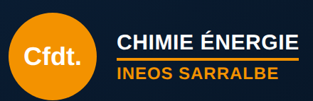

Élections du CSE · novembre 2026
Le vote électronique et le PAP, expliqués simplement
Dans un mois environ, nous élirons nos représentants au CSE. Cette fois, la direction a imposé le vote électronique. Les règles précises de ce vote vont se discuter dans un document appelé « PAP ». Voici, sans jargon, ce que c'est et sur quoi nous restons vigilants.
Ce n'est pas la première fois
Lors des dernières élections, nous avions déjà eu un vote électronique, et cela ne s'était pas bien passé. C'est pour cela que nous serons très vigilants cette fois-ci : nous voulons que chaque salarié puisse voter simplement, en toute confiance, et que le résultat soit incontestable.
C'est quoi, le PAP ?
PAP veut dire protocole d'accord préélectoral. C'est un accord écrit entre la direction et les syndicats, signé avant les élections. On peut le comparer aux règles du jeu fixées avant un match : tout le monde les connaît avant de commencer, et personne ne peut les changer en cours de route.
Il fixe notamment :
- les dates du premier tour et, si besoin, du second tour ;
- la façon de voter : ici, le vote électronique ;
- le calendrier : à partir de quand et jusqu'à quand on peut voter ;
- les règles pour déposer les listes de candidats ;
- le cas des salariés qui ne peuvent pas voter sur place (absents, en déplacement).
Qui le négocie, et quand il est valable
- La direction a l'obligation d'inviter les syndicats à négocier, au moins 2 mois avant la fin des mandats actuels.
- Chaque participant doit prouver qu'il est en droit de négocier : statuts du syndicat déposés en mairie, comptes déposés, mandat de négociation. C'est à la direction de le vérifier.
- Le PAP n'est valable que s'il est signé par la majorité des syndicats présents à la négociation, dont ceux qui ont obtenu le plus de voix aux dernières élections, ou par la majorité des syndicats représentatifs dans l'entreprise.
- La loi encadre les dates : le premier tour doit avoir lieu dans les 15 jours qui précèdent la fin des mandats, le second tour dans les 15 jours qui suivent le premier.
Le vote électronique, c'est quoi ?
Au lieu de glisser un bulletin dans une urne, chaque salarié vote sur un système informatique, avec les moyens de s'identifier que l'entreprise lui a fournis. Ce vote remplace le vote à l'urne.
Ce qu'il faut savoir : la loi permet à l'employeur de le mettre en place, et les syndicats ne peuvent pas s'y opposer. En revanche, tout ce qui concerne son organisation se discute dans le PAP. C'est donc là que nous pouvons obtenir des garanties pour les salariés.
Nos points de vigilance
Pour chaque point, voici la question simple que nous allons poser lors de la négociation.
- Un cahier des charges accessible. Comment fonctionne le système ? Ce document doit être écrit et tenu à la disposition de tous les salariés. On a le droit de savoir comment on vote.
- Le secret du vote. Personne ne doit pouvoir savoir qui a voté pour qui, ni l'entreprise, ni le prestataire.
- La sécurité. Comment sont envoyés les identifiants ? Comment est vérifié que chacun ne vote qu'une fois ? Comment les votes sont-ils enregistrés puis comptés ?
- L'accès à l'urne électronique. Qui peut y accéder, quand, et sous quel contrôle ? Cela doit être précisément encadré.
- Une aide en cas de problème. Une cellule d'assistance technique doit exister : si vous n'arrivez pas à voter, il faut quelqu'un à qui s'adresser.
- Des personnes formées. Les représentants du personnel et les membres du bureau de vote doivent être formés au système choisi pour pouvoir le contrôler.
- Que deviennent les données ? Les fichiers doivent être conservés le temps nécessaire, puis détruits.
- Les salariés absents. Un salarié en congé, en formation ou en déplacement doit pouvoir voter aussi : le PAP doit le prévoir.
Ce que pense la CFDT du vote électronique
Avant la crise du Covid, la CFDT déconseillait ce mode de vote, pour trois raisons : il éloigne les militants des salariés, il augmente souvent l'abstention, et il ne protège pas de la fraude électorale.
Même si ce choix nous est imposé, notre rôle ne change pas. Nous irons à votre rencontre, nous vous expliquerons comment voter et nous vous aiderons si besoin (démarches, identifiants, difficultés techniques). Chaque voix compte.
Vous voulez être sur la liste CFDT ?
Les élections se préparent maintenant, dès la première réunion du PAP le 12 octobre. Si vous êtes intéressé(e) pour figurer sur la liste CFDT, contactez-moi. Femmes et hommes de tous les services sont les bienvenus. Pour être candidat, il faut avoir 18 ans et 1 an d'ancienneté dans l'entreprise.
Thierry Krempff, Délégué Syndical CFDT
06.87.15.23.64 ·
thierry.krempff@gmail.com
Et maintenant ?
La première réunion de négociation du PAP aura lieu le lundi 12 octobre 2026. Les règles définitives seront connues quand le PAP sera signé : nous complèterons cette page à ce moment-là. En attendant, une question sur les élections ou sur le vote ? Contactez vos représentants CFDT, en toute confidentialité.
Source : formation CFDT « Préparer et gagner les élections », adaptée par la section CFDT INEOS Sarralbe.